Handleiding Webwinkel Beheer — voor beheerders
Deze handleiding legt uit hoe je als beheerder de H-DCN webwinkel beheert: producten en voorraad, bestellingen afhandelen, betalingen bijhouden en rapporten maken. De handleiding beschrijft Webshop Beheer zoals het nu werkt.
💡 Tip: Webshop Beheer is opgebouwd uit vier tabbladen — Producten,
Bestellingen, Betalingen en Rapporten. Elk tabblad behandelen we
hieronder apart.
1. Toegang en rollen
Webshop Beheer is beschikbaar voor beheerders met de juiste rechten. Welke acties je kunt uitvoeren, hangt af van je rol:
| Rol | Wat je ermee kunt |
|---|---|
Products_Read | Producten, bestellingen, betalingen en rapporten bekijken. |
Products_CRUD | Producten/varianten beheren, bestelstatussen en betalingen wijzigen, rapporten genereren. |
Products_Export | Rapporten exporteren naar CSV/JSON. |
Heb je een rol niet, dan zijn de bijbehorende knoppen uitgeschakeld (vaak met een tooltip die de vereiste rol noemt, bijvoorbeeld "Products_CRUD vereist").
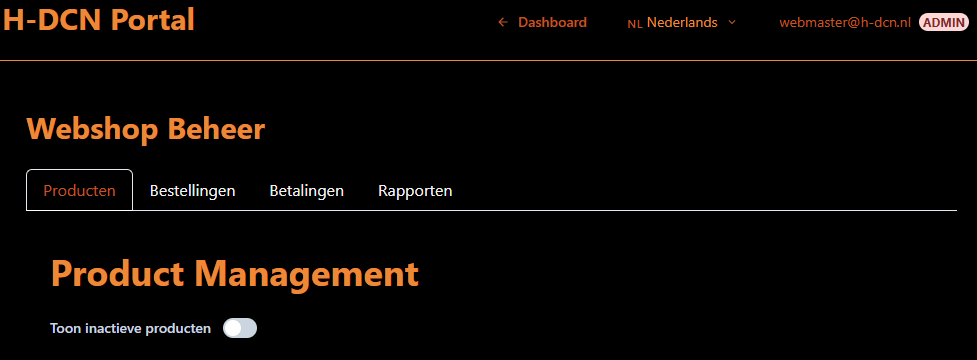
2. Navigatie
Bovenaan de pagina staat de titel Webshop Beheer met daaronder de vier tabbladen. Klik op een tabblad om te wisselen:
- Producten — productcatalogus, varianten en voorraad.
- Bestellingen — alle bestellingen en hun afhandeling.
- Betalingen — betaalstatus en handmatig betalingen registreren.
- Rapporten — financiële en operationele rapporten, met export.
3. Tabblad Producten
Op het tabblad Producten beheer je de volledige productcatalogus (producten én varianten) in één scherm.
Zoeken en filteren
- Filter de lijst op groep en subgroep (bijvoorbeeld Kleding → T-shirts).
- De kolom met de bron laat zien of een product bij de algemene webwinkel hoort (Webshop) of aan een of meer events is gekoppeld.
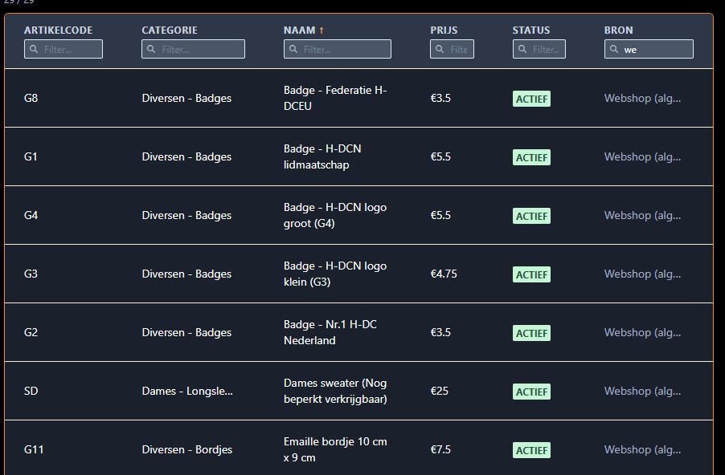
Product aanmaken en bewerken
- Klik op Nieuw product om een product toe te voegen.
- Klik op een bestaand product om het te bewerken (naam, prijs, groep, subgroep, omschrijving, afbeeldingen en koppeling aan de webwinkel of events).
- Prijzen worden als bedrag opgeslagen; vul een geldig bedrag in.
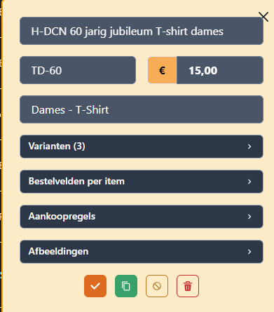
Product deactiveren
In plaats van verwijderen kun je een product deactiveren zodat het niet meer in de webwinkel verschijnt maar wel bewaard blijft voor de historie. Een gedeactiveerd product toont geen aanbod meer aan leden.
Varianten
Producten kunnen varianten hebben (bijvoorbeeld maat of kleur). Per variant beheer je de eigenschappen en de voorraad.
- Beheer bestaande varianten rechtstreeks bij het product.
- Gebruik bulk-varianten aanmaken om in één keer meerdere varianten te genereren (bijvoorbeeld alle maten S t/m XXL in meerdere kleuren).
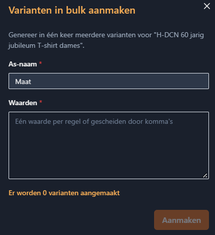
Voorraad toevoegen
Gebruik Voorraad toevoegen om de voorraad van een (variant van een) product bij te werken. Vul het aantal in dat je toevoegt; de voorraad wordt opgehoogd.
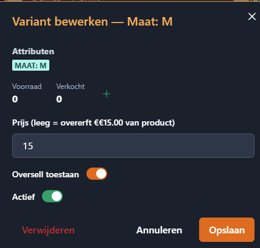
4. Tabblad Bestellingen
Op het tabblad Bestellingen zie je alle bestellingen in een filterbare, sorteerbare tabel.
De kolommen
| Kolom | Betekenis |
|---|---|
| Order ID | Uniek kenmerk van de bestelling. |
| Klant / Club | Naam van de besteller (en eventueel de club). |
| Status | De afhandelingsstatus (zie hieronder). |
| Betaling | Betaalstatus: betaald, deels betaald of onbetaald. |
| Bron | Webshop (algemene webwinkel) of een specifiek event. |
| Totaal | Het totaalbedrag van de bestelling. |
| Aangemaakt | De aanmaakdatum. |
- Klik op een kolomkop om te sorteren.
- Typ in het filterveld van een kolom om op die kolom te filteren.
- Met Filters wissen reset je alle kolomfilters; je ziet dan weer alle bestellingen.
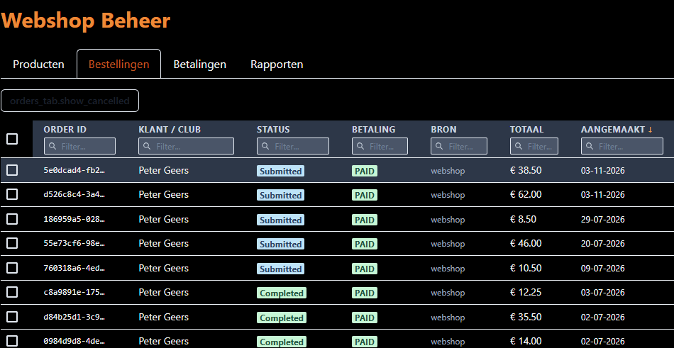
De statussen
Een bestelling doorloopt een afhandeling. De belangrijkste statussen:
- Ingediend (submitted) — de klant heeft de bestelling geplaatst.
- Vergrendeld (locked) — de bestelling is vastgezet voor verwerking.
- Betaald (paid) — de betaling is ontvangen.
- Bestelling ontvangen (order_received) — in behandeling genomen.
- Betaling in behandeling / mislukt (payment_pending / payment_failed) — tussenstatussen rond de betaling.
- Verzamelen → Ingepakt → Verzonden → Afgeleverd (picked → packed → shipped → delivered) — de verzendroute.
- Klaarzetten → Uitgereikt (ready_for_pickup → picked_up) — de afhaal-/uitgifteroute (zie ook de pick-list bij events).
- Afgerond (completed) — de bestelling is volledig afgehandeld.
- Geannuleerd (cancelled) en Retour aangevraagd/ontvangen (return_requested / return_received) — annulering en retouren.
Een bestelling openen en de status wijzigen
Klik op een rij om de orderdetails te openen. In het detailscherm zie je de volledige bestelling en de beschikbare statusovergangen vanaf de huidige status.
- De beschikbare overgangen verschillen voor een Webshop-order (badge blauw) en een Event-order (badge paars).
- Met lock all kun je bestellingen in bulk vergrendelen (binnen het huidige filter/event).
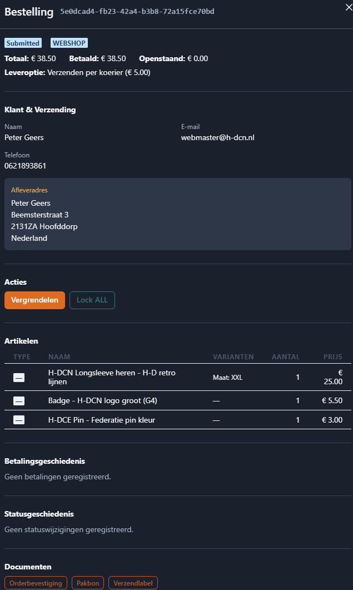
Meerdere bestellingen tegelijk (batch)
Selecteer meerdere bestellingen met de selectievakjes (of selecteer alles via de kop). Met de geselecteerde bestellingen kun je:
- Markeer als… — in één keer een nieuwe status instellen voor alle geselecteerde bestellingen.
- Download pakbonnen — genereer de pakbonnen van de selectie als één PDF.
- Download labels — genereer de verzendlabels van de selectie als één PDF.
Na afloop zie je een melding met hoeveel bestellingen zijn bijgewerkt (en eventueel mislukt).
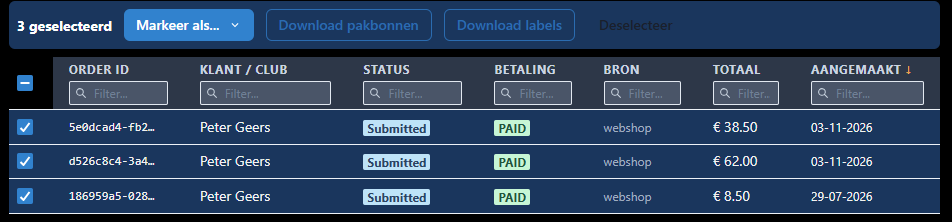
Geannuleerde bestellingen tonen
Geannuleerde bestellingen zijn standaard verborgen. Gebruik de knop Toon geannuleerd / Verberg geannuleerd om ze in of uit de lijst te schakelen.
5. Tabblad Betalingen
Op het tabblad Betalingen houd je de betaalstatus van bestellingen bij.
Totalen
Bovenaan zie je drie overzichtskaarten:
- Totaal Gefactureerd — de som van alle bestellingen.
- Totaal Betaald — de ontvangen betalingen.
- Totaal Openstaand — wat er nog openstaat.
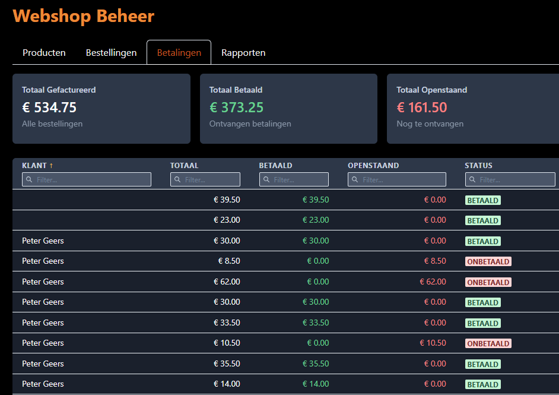
Betaallijst en een betaling registreren
Onder de totalen staat een filterbare lijst per bestelling met totaal, betaald, openstaand en de betaalstatus (Betaald / Deels betaald / Onbetaald).
- Klik op een rij om de betaaldetails te openen.
- Is de bestelling nog niet volledig betaald en heb je het recht om te wijzigen (
Products_CRUD), dan kun je in het detailscherm een betaling registreren (bijvoorbeeld een ontvangen overschrijving). Vul het ontvangen bedrag in en bevestig.
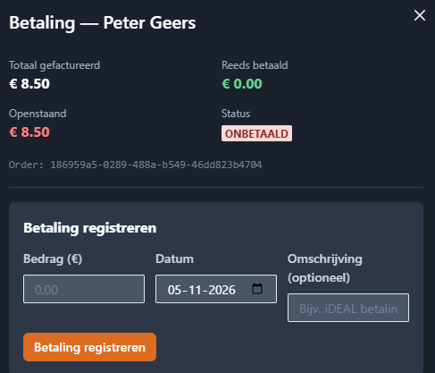
6. Tabblad Rapporten
Op het tabblad Rapporten maak je overzichten en exporteer je gegevens.
Rapporttype en filters
- Kies een rapporttype: Financieel, Producten, Bestellingen of Voorraadmutaties.
- Verfijn met de filters Order status en Betaalstatus.
Genereren en exporteren
- Klik op Rapport genereren om het rapport op te bouwen (vereist
Products_CRUD). Je ziet het tijdstip waarop het rapport is gegenereerd. - Kies een exportformaat (CSV of JSON) en klik op Download om het rapport te exporteren (vereist
Products_Export).
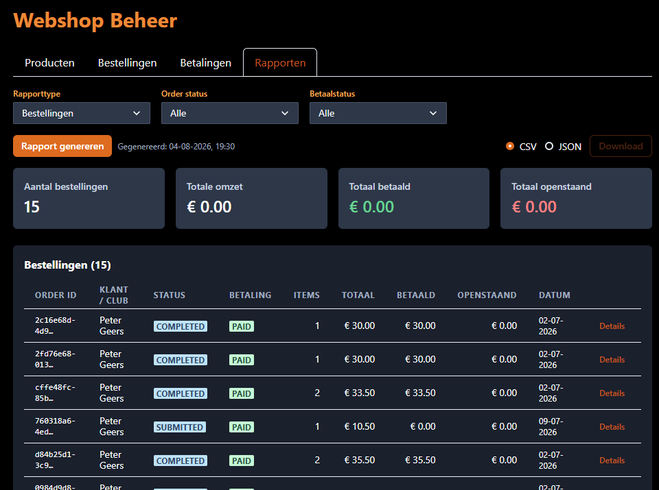
7. Winkel per event (en regio-winkels)
Naast de algemene webwinkel ondersteunt het systeem een winkel per event: een afgebakende set producten en bestellingen die aan een specifiek event gekoppeld is. Dit is handig voor bijvoorbeeld een toerrit, een evenement of een bijeenkomst met eigen artikelen.
Hoe producten aan een event hangen
- Elk product heeft een koppeling via
event_ids. De waardeevt-webshopbetekent dat het product bij de algemene webwinkel hoort. - Koppel je een product (ook) aan een event, dan hoort het bij de winkel van dat event. Een product kan zowel in de algemene webwinkel als bij een event staan.
- De ledenwinkel toont standaard de algemene producten. Een event-winkel toont de selectie die aan dat event is gekoppeld.
Event-bestellingen herkennen en afhandelen
- Bestellingen dragen de bron Webshop of een event. In de bestellingen-tabel filter je hierop via de kolom Bron.
- In de orderdetails zie je een gekleurde badge: blauw voor een Webshop-order, paars voor een Event-order. De beschikbare statusovergangen sluiten aan op het type order.
Pick-list: uitgifte ter plaatse
Filter je in het tabblad Bestellingen op een specifiek event, dan verschijnt de knop Pick-list. De pick-list is bedoeld voor uitgifte op locatie en toont de betaalde bestellingen van dat event, gegroepeerd op status:
- Betaald — bestellingen die klaargemaakt moeten worden.
- Klaarzetten — selecteer betaalde bestellingen en markeer ze als ready_for_pickup.
- Uitreiken — reik een klaargezette bestelling uit aan de klant en markeer hem als picked_up.
Bovenaan zie je tellers: hoeveel bestellingen betaald, klaar en uitgereikt zijn.
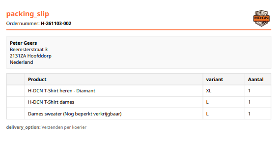
Vooruitblik: regio-winkels
Dit event-mechanisme leent zich ook voor regio-winkels. Een regio zou langs dezelfde weg een eigen winkel kunnen krijgen:
- Een eigen productselectie (producten gekoppeld aan de regio, vergelijkbaar met een event).
- Een eigen bestellijst, af te filteren via de kolom Bron.
- Dezelfde pick-list-uitgifte voor het uitreiken van bestellingen op een regio-bijeenkomst.
ℹ️ Opmerking: Regio-winkels zijn een vooruitblik op basis van het bestaande
event-mechanisme. De exacte inrichting kan per toekomstige uitwerking
verschillen.
Vragen over rechten of een specifieke actie? Neem contact op met een H-DCN-beheerder.